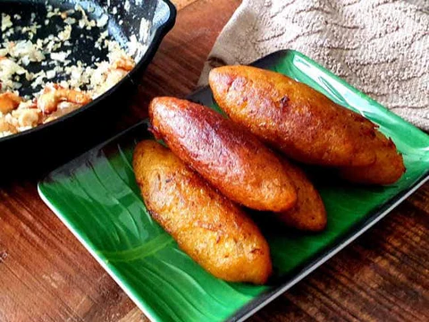

Pazham Pori (Banana Fritters)
Ingredients:
- 2 ripe bananas (Nendran variety)
- 1 cup all-purpose flour (maida)
- 2 tablespoons rice flour
- 1/4 teaspoon turmeric powder
- 2 tablespoons sugar (optional)
- A pinch of salt
- Water, as needed
- Oil, for frying
Instructions:
- Peel the bananas and slice them lengthwise into thin pieces.
- In a mixing bowl, combine the all-purpose flour, rice flour,
turmeric powder, sugar (if using), and salt.
- Add water gradually to make a smooth batter.
The batter should be thick enough to coat the banana slices.
- Heat oil in a frying pan over medium heat.
- Dip the banana slices into the batter, ensuring they
are well-coated, and carefully place them in the hot oil.
- Fry until they turn golden and crispy on both sides.
- Remove and drain on paper towels. Serve hot with tea.
Uzhunnu Vada (Medu Vada)
Ingredients:
- 1 cup urad dal (black gram dal)
- 1 green chili, finely chopped
- 1-inch piece ginger, finely chopped
- 1 small onion, finely chopped
- 1/4 teaspoon black peppercorns
- 1 sprig curry leaves, chopped
- Salt to taste
- Oil for deep frying
Instructions:
- Soak the urad dal in water for 2-3 hours. Drain and grind to a smooth,
thick batter without adding too much water.
- Add the chopped green chili, ginger, onion, black
peppercorns, curry leaves, and salt to the batter. Mix well.
- Heat oil in a frying pan over medium heat.
- Wet your hands with water, take a small portion of the
batter, shape it into a donut (vada) with a hole in the center, and gently
slide it into the hot oil.
- Fry until the vada turns golden brown and crispy on both sides.
- Remove and drain on paper towels. Serve hot with coconut chutney
and sambar.
Parippu Vada (Lentil Fritters)
Ingredients:
- 1 cup chana dal (split Bengal gram)
- 2 dried red chilies
- 1 small onion, finely chopped
- 1-2 green chilies, finely chopped
- 1-inch piece ginger, finely chopped
- 1 sprig curry leaves, chopped
- A pinch of asafoetida (hing)
- Salt to taste
- Oil for frying
Instructions:
- Soak the chana dal in water for 2 hours. Drain and coarsely grind it
with the dried red chilies, adding very little water if needed.
- Transfer the ground dal to a mixing bowl and add the chopped onion,
green chilies, ginger, curry leaves, asafoetida, and salt. Mix well.
- Heat oil in a frying pan over medium heat.
- Take small portions of the mixture, shape them into small
patties, and carefully place them in the hot oil.
- Fry until they turn golden brown and crispy on both sides.
- Remove and drain on paper towels. Serve hot with coconut
chutney or tomato ketchup.

Unnakaya (Stuffed Plantain Rolls)
Ingredients:
- 4 ripe Nendran bananas
- 1/2 cup grated coconut
- 1/4 cup sugar
- 2 tablespoons chopped cashew nuts
- 2 tablespoons raisins
- 1/2 teaspoon cardamom powder
- Ghee or oil, for frying
Instructions:
- Steam the ripe bananas until they are soft. Let them cool,
then peel and mash them to a smooth dough.
- In a pan, heat a little ghee and fry the cashew nuts and
raisins until golden. Add the grated coconut and sugar, and cook until the
mixture is slightly dry. Add cardamom powder and mix well. Let it cool.
- Take a small portion of the mashed banana dough, flatten it in
your hand, and place a spoonful of the coconut filling in the center.
Fold the banana dough over the filling and shape it into a cylindrical
roll (like a stuffed roll).
- Heat oil or ghee in a pan and shallow fry the stuffed rolls
until golden brown on all sides.
- Remove and drain on paper towels. Serve warm with tea.